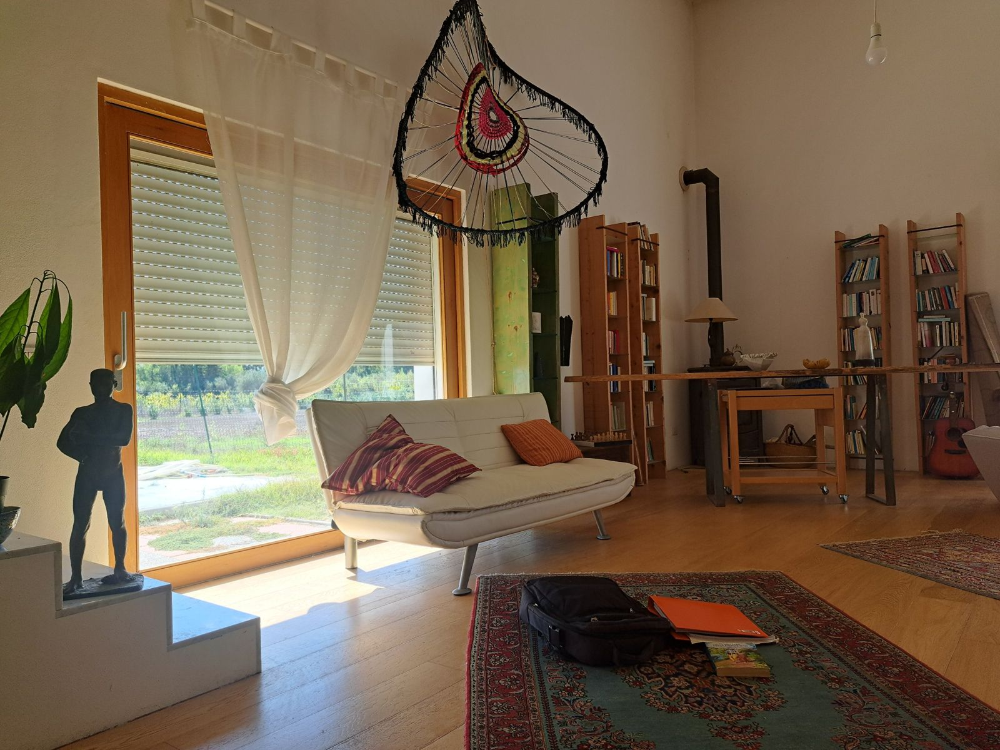

FELICITASMUNDI · COMUNITÀ ETERNA
La casa viva
questa settimana · luna nuova · 10–16 ottobre

la finestra · il vicinato
la pianta · l'Emporio
la stufa · l'Assistenza
i libri · la Scuola
la statua · il praticantato
la cartella · stampa
la chitarra · pubblica
guarda con il Nexus
tocca le cose della stanza
stampa
pubblica
guarda con il Nexus
orma
bozza in prova · la foto è il luogo di Gab, 10 ottobre